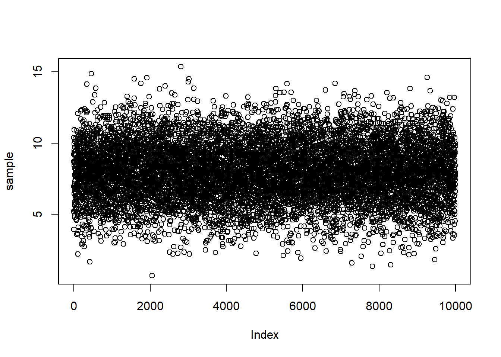
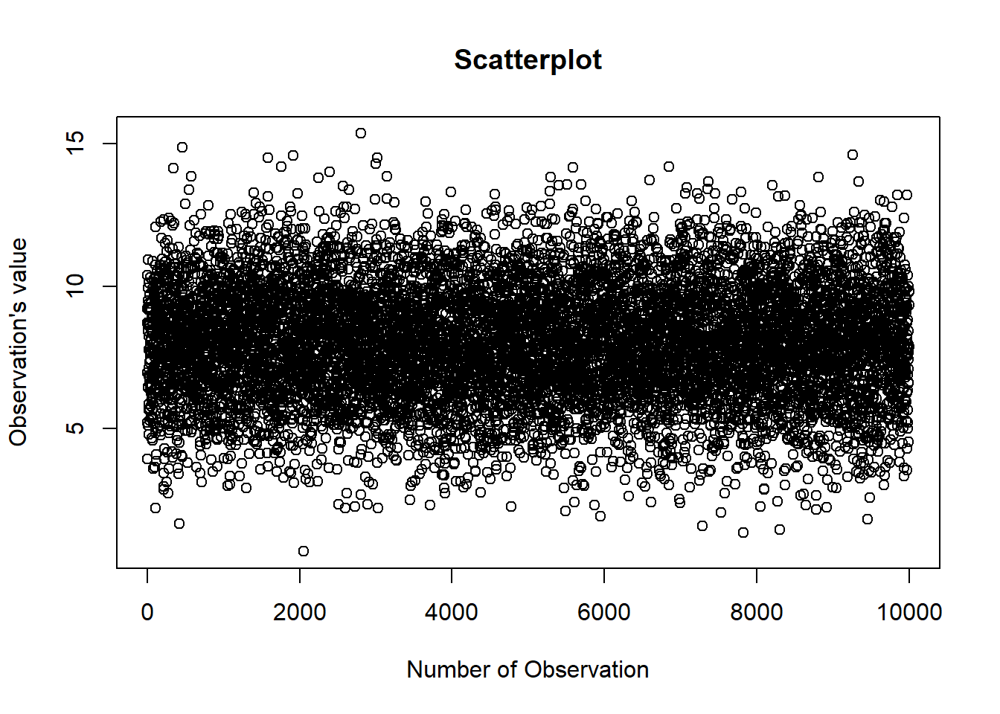
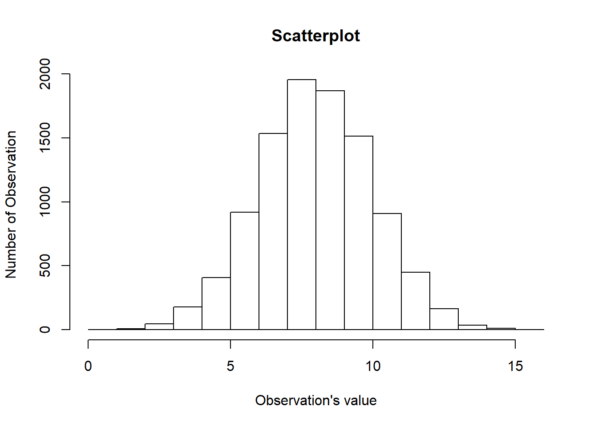
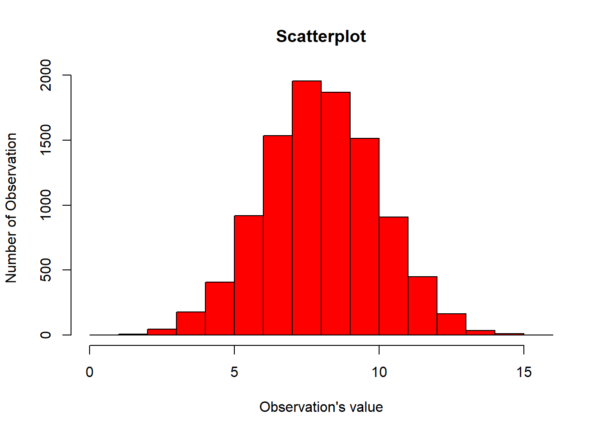
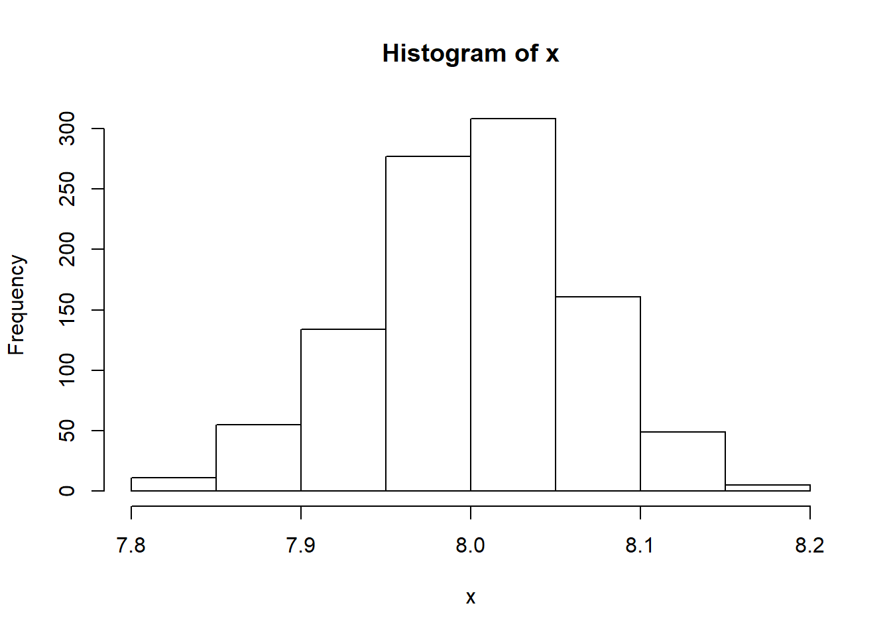
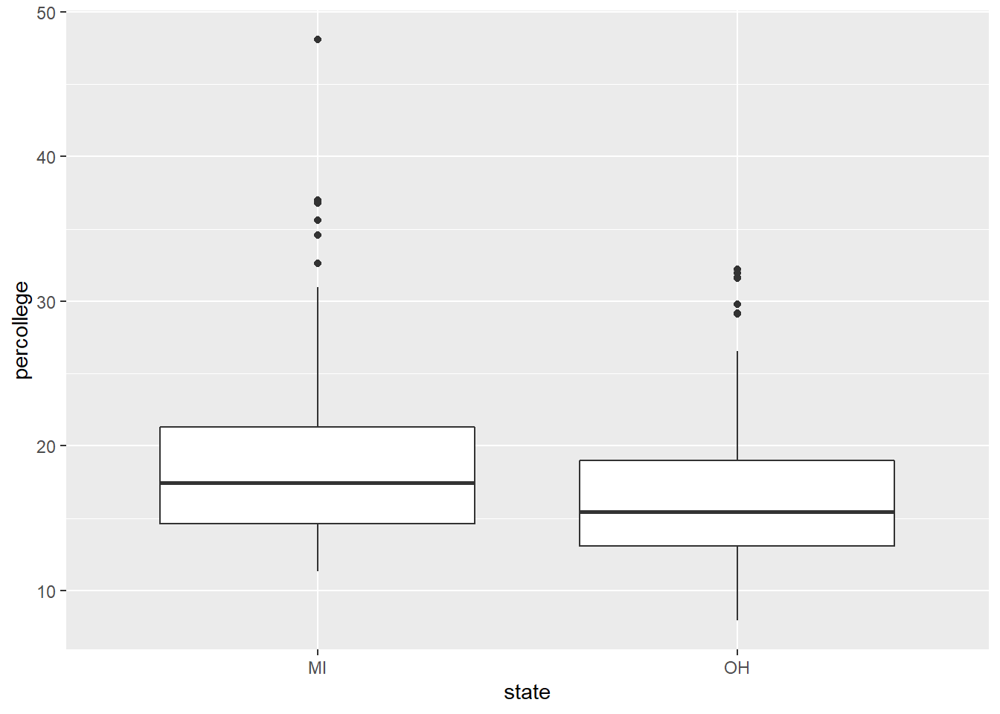

Introductory in Inference
Pamela Dekpo
Statistical models:
A model equation usually is of the form Data = Model + Error. The model explains most of the variation in the data while the resiudal represents the lack off it. A good model statistician or data scientist is the one that can come up with adequate models and can aso estimate the model’s parameters.
There are two types of estimation:
- Point Estimation: average of a sample as a point estimate for the population
- Interval Estimation: using p.e. the true average for the population remains unkown. Hence, we can calculate an confidence interval estimate of the form:
- Interval Estimate = Point Estimate +- Constant x Standard Error.
- A confidecene interval is an improved tool to make inference, which takes into account the >uncertainty of statistics, to make statement (hypothesis) about the population, using all the information available in the sample.
How to interpret a 95% CI: If , hypothetically many people were to use this same formula to construct this CI, plugging in the results of their individual random samples, abount 95% of the CI’s of these people would contain the paramter and about 5 % of the CI’s would exclude the parameter. Note: Confidence coefficient(the closer to 1 the wider it is), Interval width (the narrower the better), Sample size (the smaller the better)
Testing & Hypothesis:
To conduct a test we formulate hypothesis and reject or not-reject them. The Null Hypothesis is HO and it always contains the equality sign. The alternative hypothesis is called H1. A test can be one-sided or two sided.
Testing a Hypothesis About the Mean: The Z-score measures by how many standard deviations away from the mean our value of interest is standing. A Z-score of 0 indicates that the data point’s score is identical to the mean score. The p-value measures the probability of the true Z-score beeing bigger than the threshold zcalc.
Testing a Hypothesis About the Proportion of a Population: We consider a confidence interval on the unknown proportion p of successes in a population consisting of items or people labeled as successes and failures.
Example: We wish to estimate the proportion p of voters who will unlimately vote for a particular candidate, based on a random sample from a population of likely voters.
Inspectors of industrial output wish to estimate the proportion p of a day’s output that is defective based on a random samplin of this output.
Compute a CI on the difference between two proportions: We might wish to estimate te difference in the p of voters in two different populations who favor a particular candidate, or the difference in the proportions of defectives produced by two company locations. In order to do so, we label the population as 1 and 2, assuming both are lare and neither proportion is close to either 0 or 1.
Compute a CI on the difference between two means: We will compare two populations by constructing confidence intervals on the difference of the population means. We assume random samples are independently selected from each population and if the variances can be assumed to be equal, their common value is estimated as a weighted average of the two individual sample variances. This method is referred as poolin and the result in the context is called a pooled variance.
Implementation in R using Cases
Case I
Confidence Interval for the Mean assuming a Normal Distribution
# Generate data with a specific mean, standard deviation, and (normal) distribution.
population<-rnorm(n=100000, mean=8, sd=2)
head(population)## [1] 11.452083 1.578019 10.538794 7.675785 9.948274 9.099716# Take a sample of your population
sample<-sample(population,10000)
head(sample)## [1] 8.712970 5.216090 10.390132 3.935235 6.962940 9.197629# Calculate the mean of this sample
mean(sample)## [1] 7.997595mean(population)## [1] 8.002212# Calculate the sd of this sample
sd(sample)## [1] 1.981394sd(population)## [1] 2.00332# Plot the data
plot(sample)
# Fit a title to the graph and the axis
plot(sample, main = "Scatterplot", xlab= "Number of Observation", ylab="Observation's value")
# Plot a histogram and write adequate titles and
hist(sample, main = "Scatterplot", ylab= "Number of Observation", xlab="Observation's value")
# Color the graph in light blue
hist(sample, main = "Scatterplot", ylab= "Number of Observation", xlab="Observation's value", col = "red")
# Calculate the 95% confidence interval manually
# This gives us the "Reliability Factor"
qnorm(0.975)## [1] 1.959964# Integrate it into the C.I. Formula:
interval<-mean(sample) + c(-1,+1) * qnorm(0.975) * sd(sample)/sqrt(1000)
interval## [1] 7.874789 8.120401mean(population)## [1] 8.002212max<-mean(sample) + qnorm(0.975) * sd(sample)/sqrt(1000)
max## [1] 8.120401min<-mean(sample) - qnorm(0.975) * sd(sample)/sqrt(1000)
min## [1] 7.874789#Lower Boundary:
interval[1]## [1] 7.874789#Upper Boundary:
interval[2]## [1] 8.120401# Now let us take 1000 random samples from our population.
# Each sample shall have 25000 individuals on it.
# Out of these 1000 samples, let us caluclate the mean.
i<-c(1:1000)
i## [1] 1 2 3 4 5 6 7 8 9 10 11 12 13 14
## [15] 15 16 17 18 19 20 21 22 23 24 25 26 27 28
## [29] 29 30 31 32 33 34 35 36 37 38 39 40 41 42
## [43] 43 44 45 46 47 48 49 50 51 52 53 54 55 56
## [57] 57 58 59 60 61 62 63 64 65 66 67 68 69 70
## [71] 71 72 73 74 75 76 77 78 79 80 81 82 83 84
## [85] 85 86 87 88 89 90 91 92 93 94 95 96 97 98
## [99] 99 100 101 102 103 104 105 106 107 108 109 110 111 112
## [113] 113 114 115 116 117 118 119 120 121 122 123 124 125 126
## [127] 127 128 129 130 131 132 133 134 135 136 137 138 139 140
## [141] 141 142 143 144 145 146 147 148 149 150 151 152 153 154
## [155] 155 156 157 158 159 160 161 162 163 164 165 166 167 168
## [169] 169 170 171 172 173 174 175 176 177 178 179 180 181 182
## [183] 183 184 185 186 187 188 189 190 191 192 193 194 195 196
## [197] 197 198 199 200 201 202 203 204 205 206 207 208 209 210
## [211] 211 212 213 214 215 216 217 218 219 220 221 222 223 224
## [225] 225 226 227 228 229 230 231 232 233 234 235 236 237 238
## [239] 239 240 241 242 243 244 245 246 247 248 249 250 251 252
## [253] 253 254 255 256 257 258 259 260 261 262 263 264 265 266
## [267] 267 268 269 270 271 272 273 274 275 276 277 278 279 280
## [281] 281 282 283 284 285 286 287 288 289 290 291 292 293 294
## [295] 295 296 297 298 299 300 301 302 303 304 305 306 307 308
## [309] 309 310 311 312 313 314 315 316 317 318 319 320 321 322
## [323] 323 324 325 326 327 328 329 330 331 332 333 334 335 336
## [337] 337 338 339 340 341 342 343 344 345 346 347 348 349 350
## [351] 351 352 353 354 355 356 357 358 359 360 361 362 363 364
## [365] 365 366 367 368 369 370 371 372 373 374 375 376 377 378
## [379] 379 380 381 382 383 384 385 386 387 388 389 390 391 392
## [393] 393 394 395 396 397 398 399 400 401 402 403 404 405 406
## [407] 407 408 409 410 411 412 413 414 415 416 417 418 419 420
## [421] 421 422 423 424 425 426 427 428 429 430 431 432 433 434
## [435] 435 436 437 438 439 440 441 442 443 444 445 446 447 448
## [449] 449 450 451 452 453 454 455 456 457 458 459 460 461 462
## [463] 463 464 465 466 467 468 469 470 471 472 473 474 475 476
## [477] 477 478 479 480 481 482 483 484 485 486 487 488 489 490
## [491] 491 492 493 494 495 496 497 498 499 500 501 502 503 504
## [505] 505 506 507 508 509 510 511 512 513 514 515 516 517 518
## [519] 519 520 521 522 523 524 525 526 527 528 529 530 531 532
## [533] 533 534 535 536 537 538 539 540 541 542 543 544 545 546
## [547] 547 548 549 550 551 552 553 554 555 556 557 558 559 560
## [561] 561 562 563 564 565 566 567 568 569 570 571 572 573 574
## [575] 575 576 577 578 579 580 581 582 583 584 585 586 587 588
## [589] 589 590 591 592 593 594 595 596 597 598 599 600 601 602
## [603] 603 604 605 606 607 608 609 610 611 612 613 614 615 616
## [617] 617 618 619 620 621 622 623 624 625 626 627 628 629 630
## [631] 631 632 633 634 635 636 637 638 639 640 641 642 643 644
## [645] 645 646 647 648 649 650 651 652 653 654 655 656 657 658
## [659] 659 660 661 662 663 664 665 666 667 668 669 670 671 672
## [673] 673 674 675 676 677 678 679 680 681 682 683 684 685 686
## [687] 687 688 689 690 691 692 693 694 695 696 697 698 699 700
## [701] 701 702 703 704 705 706 707 708 709 710 711 712 713 714
## [715] 715 716 717 718 719 720 721 722 723 724 725 726 727 728
## [729] 729 730 731 732 733 734 735 736 737 738 739 740 741 742
## [743] 743 744 745 746 747 748 749 750 751 752 753 754 755 756
## [757] 757 758 759 760 761 762 763 764 765 766 767 768 769 770
## [771] 771 772 773 774 775 776 777 778 779 780 781 782 783 784
## [785] 785 786 787 788 789 790 791 792 793 794 795 796 797 798
## [799] 799 800 801 802 803 804 805 806 807 808 809 810 811 812
## [813] 813 814 815 816 817 818 819 820 821 822 823 824 825 826
## [827] 827 828 829 830 831 832 833 834 835 836 837 838 839 840
## [841] 841 842 843 844 845 846 847 848 849 850 851 852 853 854
## [855] 855 856 857 858 859 860 861 862 863 864 865 866 867 868
## [869] 869 870 871 872 873 874 875 876 877 878 879 880 881 882
## [883] 883 884 885 886 887 888 889 890 891 892 893 894 895 896
## [897] 897 898 899 900 901 902 903 904 905 906 907 908 909 910
## [911] 911 912 913 914 915 916 917 918 919 920 921 922 923 924
## [925] 925 926 927 928 929 930 931 932 933 934 935 936 937 938
## [939] 939 940 941 942 943 944 945 946 947 948 949 950 951 952
## [953] 953 954 955 956 957 958 959 960 961 962 963 964 965 966
## [967] 967 968 969 970 971 972 973 974 975 976 977 978 979 980
## [981] 981 982 983 984 985 986 987 988 989 990 991 992 993 994
## [995] 995 996 997 998 999 1000x<-c()
for (element in i){
x[element]<-mean(sample(population,1000))
}
x## [1] 8.016103 7.978629 7.971537 8.022125 8.010483 8.004027 7.920406 8.100096
## [9] 8.009420 7.941278 8.049992 8.049308 8.018581 7.998807 8.087586 7.984267
## [17] 8.004610 8.030400 7.982535 8.029548 8.036177 8.000185 7.929810 8.120644
## [25] 8.067634 7.886608 8.006541 7.893522 8.036762 7.932987 8.052565 7.956068
## [33] 7.955291 8.109881 8.052118 8.129216 8.011966 8.052302 8.013243 8.080496
## [41] 7.994613 7.988326 8.041317 8.041487 7.906400 8.030315 7.956003 7.949479
## [49] 8.061440 8.061769 7.992336 7.922606 7.851621 7.941657 7.996258 7.931591
## [57] 7.986955 8.016722 8.116548 7.972520 7.920358 7.984649 7.941590 8.022121
## [65] 7.984114 7.998231 7.918730 7.913476 7.962224 7.967085 8.011450 7.994427
## [73] 8.085271 8.006116 8.003273 8.108203 7.959473 8.034115 7.985600 7.990526
## [81] 8.007994 8.019969 8.088834 7.968973 8.045753 8.111871 7.931826 8.052826
## [89] 7.964101 8.080347 7.924983 8.020523 7.941921 8.097035 7.941313 7.971455
## [97] 8.089698 8.108031 7.941096 7.895418 8.047908 8.035937 8.017143 8.124235
## [105] 7.946053 7.989631 8.003034 7.972314 8.006974 7.931732 7.992357 8.090996
## [113] 7.841122 7.942819 8.097147 8.033832 8.063045 8.018857 7.918859 7.880387
## [121] 8.078644 7.929945 8.025213 7.969088 8.152732 7.985872 8.026634 7.996125
## [129] 7.963659 7.999886 7.946905 8.022674 7.890847 8.008129 8.067998 8.025814
## [137] 8.029469 7.977514 8.027983 7.927606 7.874679 8.042941 8.006877 8.054882
## [145] 8.030600 8.121810 8.000029 8.062868 7.961577 8.034028 8.021577 7.978308
## [153] 8.027254 8.039088 8.003378 8.036760 7.861162 8.049812 7.963080 7.963302
## [161] 8.042547 7.876352 8.065945 8.012103 7.944398 8.047748 8.040357 7.938119
## [169] 8.003634 7.916193 8.051572 7.974688 8.018621 8.071427 8.090171 7.979779
## [177] 8.047837 8.029488 8.075761 7.987365 7.992546 8.069837 8.039198 8.038001
## [185] 8.106973 7.928185 7.990581 8.097219 7.947275 7.971801 8.003886 7.984924
## [193] 8.172137 8.060121 7.979707 8.071732 8.034960 8.103249 8.003451 8.096334
## [201] 7.984831 8.000354 8.049991 7.949329 8.093201 8.028385 7.949367 8.147719
## [209] 7.859490 8.061801 8.026220 8.062260 7.945288 8.008403 7.957431 7.904366
## [217] 8.019807 7.997225 7.934658 8.045729 8.066366 7.997344 8.077330 7.937280
## [225] 7.893869 8.028412 7.981280 7.992225 7.999214 8.012827 7.987427 7.867641
## [233] 7.926940 7.972772 7.999886 8.026440 7.942350 7.996652 8.043299 8.032594
## [241] 8.054371 7.960029 7.987219 7.918138 7.945195 7.979154 8.036826 8.012161
## [249] 8.057240 7.993718 7.963886 8.018507 7.923992 7.983670 7.991389 7.965847
## [257] 7.952606 7.890649 7.875161 8.137019 8.059097 7.998908 8.056820 8.066551
## [265] 8.048175 8.054963 7.858015 7.991426 8.011426 7.962562 8.105342 8.065255
## [273] 7.959446 8.007664 8.067458 7.896359 8.093391 7.964257 7.966002 7.993416
## [281] 7.880817 8.025497 7.983142 8.005626 8.031133 7.942588 7.985462 7.962041
## [289] 8.068310 7.974936 7.997773 7.944208 7.933675 8.089842 7.897939 7.980221
## [297] 8.125297 7.878314 7.940338 8.003405 7.979015 7.974199 7.954605 7.986886
## [305] 7.870942 7.964995 7.986357 8.100117 7.990081 7.843631 8.049137 8.050573
## [313] 7.960601 8.012308 7.964204 8.045599 8.038131 8.027292 7.892015 7.989272
## [321] 8.038243 8.047451 7.928046 8.008899 8.073546 7.954730 8.001332 8.000395
## [329] 8.048244 8.122495 7.994972 8.027530 8.021429 8.106576 8.031649 7.956785
## [337] 8.034589 8.040022 7.983849 8.023088 7.953571 8.010654 8.018630 7.893440
## [345] 7.973930 7.951035 7.897929 8.177736 7.870366 8.075555 7.996808 7.988820
## [353] 7.873558 8.073958 8.125410 7.930933 8.075082 7.960078 8.070147 8.020930
## [361] 7.988573 8.042155 8.027684 8.140910 7.950676 8.008171 8.058287 8.017115
## [369] 7.925579 8.027063 7.936712 8.000734 7.905400 7.989588 7.913718 8.057994
## [377] 7.990723 7.981975 7.878675 7.994238 8.037886 8.031562 7.905466 7.991940
## [385] 8.050757 8.034771 8.028344 8.061435 7.957351 8.141615 8.055759 7.909941
## [393] 8.093987 7.977323 7.984514 7.976573 7.906220 8.064466 8.049922 7.963139
## [401] 7.973425 7.935911 8.053907 8.106882 8.015033 8.010782 8.039758 8.078261
## [409] 8.076711 8.049201 8.078029 8.040582 8.029974 7.975485 7.918318 8.059284
## [417] 8.027044 8.002008 8.036997 8.080651 8.008953 7.972907 7.989569 8.052058
## [425] 7.961180 8.088581 7.991708 7.835728 8.028026 7.997405 7.999284 7.971188
## [433] 7.979315 7.932161 7.921019 7.992085 8.126925 7.997963 8.003729 8.013529
## [441] 7.976040 7.979812 7.963396 7.936273 7.970164 7.943795 8.110282 7.962180
## [449] 8.072476 7.819722 8.019242 8.115412 8.061484 7.981952 7.975512 7.941718
## [457] 8.121601 8.052873 8.004109 7.872739 7.937782 7.997416 8.032847 7.963304
## [465] 8.065068 8.008420 8.095764 8.027955 7.992608 8.047886 7.941182 7.936849
## [473] 8.051871 8.050787 7.978913 8.020822 8.111608 8.022748 8.028303 7.979031
## [481] 7.843995 7.878155 7.871121 7.976341 7.962086 7.949768 8.013971 8.046767
## [489] 7.976214 7.915047 8.000479 7.971904 7.845718 8.069612 8.069643 7.946869
## [497] 7.939116 7.925394 8.082990 8.134093 8.063129 8.037915 8.006285 8.052834
## [505] 8.101436 8.082781 8.023338 8.007672 8.092268 8.030698 8.092028 8.045703
## [513] 8.047118 7.957530 7.941530 8.044467 8.041345 7.979701 7.996974 8.026142
## [521] 8.016170 7.898812 8.093593 8.035083 7.928485 8.044866 8.033498 7.883416
## [529] 7.913232 7.993095 7.998706 8.029427 8.062232 8.072994 7.946584 8.055842
## [537] 8.018804 8.101078 7.977331 8.009791 7.992360 7.911654 8.016971 7.986006
## [545] 8.049200 8.095814 7.952066 8.039696 8.073700 7.968718 8.050946 7.972717
## [553] 7.992412 8.030866 7.960001 8.078857 7.890900 7.945250 8.009974 8.016231
## [561] 7.960252 7.938750 8.006210 7.934178 8.039520 8.106238 7.961186 7.906288
## [569] 8.087672 8.137461 7.973914 7.976186 8.023843 7.990869 7.993904 8.059920
## [577] 8.037026 7.912132 8.083913 7.939309 7.946686 7.844865 7.936427 7.960681
## [585] 7.966933 8.052444 8.049610 8.085615 8.036392 7.999067 8.004630 8.066570
## [593] 7.940018 7.983083 8.036415 8.075763 8.018689 8.041193 8.039231 8.029972
## [601] 8.046436 7.901152 8.037785 7.952750 7.996152 7.983668 7.970821 7.973603
## [609] 7.951046 7.907465 7.953697 8.081885 8.095427 7.986976 7.993540 7.852851
## [617] 7.980542 7.975644 7.925105 7.972573 7.930428 8.120874 8.026642 7.927155
## [625] 8.005447 7.984751 8.039384 7.930988 7.878062 8.001135 7.975741 7.917548
## [633] 8.068567 7.924032 8.025221 8.038147 7.954822 7.944666 7.972582 7.985918
## [641] 7.869721 8.047725 7.903265 8.022618 7.885645 7.986663 8.019753 8.011300
## [649] 8.120216 7.997252 8.019458 8.031411 7.866320 8.004909 7.884932 7.861893
## [657] 7.977435 8.068054 7.925971 8.010385 8.041081 7.906626 7.952390 7.984215
## [665] 7.952523 8.011230 8.059546 8.140193 7.940987 7.995415 7.931700 7.958952
## [673] 8.076446 7.951454 7.999131 7.927257 7.990028 7.991595 8.060409 7.987692
## [681] 8.000774 8.023442 7.930343 7.952519 8.065619 8.039428 7.965181 7.981455
## [689] 8.025443 7.835406 8.052127 8.003192 7.905841 8.004887 7.942812 7.971163
## [697] 8.094719 8.093652 7.942676 7.994879 8.032555 8.092985 7.958913 7.959776
## [705] 7.904009 8.058295 8.115838 7.926454 7.990973 8.001309 8.031184 7.900314
## [713] 7.955038 8.077036 8.095319 7.990915 8.001831 8.000122 7.942465 7.978564
## [721] 8.008492 8.021646 8.008928 8.009313 7.909190 7.966115 8.080756 7.940901
## [729] 8.017650 8.079374 7.966484 7.956951 7.884576 7.984833 7.981118 7.954760
## [737] 8.038825 7.803238 8.018554 8.012927 8.027422 7.991752 7.894859 8.029580
## [745] 7.929179 8.006426 8.020460 8.017705 8.108983 8.035725 8.009574 8.091697
## [753] 8.008254 7.962061 8.037440 7.998938 8.084240 7.989913 7.973106 8.053539
## [761] 7.833981 8.104682 7.959660 7.994836 8.015054 8.023595 7.990545 8.041809
## [769] 7.911005 7.960088 8.040524 8.067530 8.109160 7.930819 7.961707 8.028361
## [777] 8.137626 8.050160 8.001489 7.942353 7.962063 8.029456 8.111570 7.959100
## [785] 8.057850 8.058095 8.028985 8.037808 8.021901 8.095375 7.962584 8.013307
## [793] 7.898795 8.069735 8.134524 8.044452 8.048625 8.008133 8.002852 7.962371
## [801] 8.045895 8.182788 8.016211 8.048203 8.052386 8.004343 8.010105 7.952016
## [809] 8.022102 8.044624 8.157538 7.958586 8.013412 7.988241 8.012141 8.034636
## [817] 7.979606 7.938138 7.839667 7.900536 8.022621 7.997916 8.016740 7.882686
## [825] 7.981131 7.932781 8.035767 8.116830 7.894408 8.037569 8.009513 8.006842
## [833] 7.998333 7.999249 7.980221 8.069087 7.996985 8.046280 7.902962 8.064611
## [841] 8.088114 8.084335 8.059156 8.022068 7.878573 8.009096 7.953192 7.946822
## [849] 7.998290 7.972593 7.992606 8.042060 7.986995 7.972615 7.953540 7.960167
## [857] 8.035230 8.064291 7.890103 8.042544 8.049506 8.025620 8.087428 7.997300
## [865] 7.994381 7.964240 8.092157 8.007593 8.002390 7.980405 8.035355 8.108744
## [873] 8.020738 8.034448 7.993235 8.009513 7.883041 8.004643 8.018782 7.939258
## [881] 8.088263 8.057566 8.069226 8.117524 7.930158 7.995671 8.081425 8.024913
## [889] 7.988825 7.908234 8.029952 7.889494 7.984953 8.041920 7.937935 7.985920
## [897] 7.975923 8.080904 8.024577 7.967442 7.956465 7.935632 7.942848 7.989483
## [905] 7.922497 8.076527 7.923513 8.028072 7.982722 8.017615 8.081471 8.078025
## [913] 8.001852 7.953668 8.002729 7.977960 8.075533 8.002593 8.074663 8.042374
## [921] 7.939204 7.998228 8.046357 7.950120 7.964079 8.070608 7.943527 8.068599
## [929] 8.007567 8.046510 8.012739 8.092551 8.017900 8.058227 7.950556 8.077046
## [937] 8.037849 7.948683 7.985682 7.864288 8.038590 7.918525 8.004587 7.900805
## [945] 8.084078 7.887799 8.035659 7.992460 8.142063 8.047792 7.876539 7.977227
## [953] 8.078108 8.017424 8.064801 8.043509 8.065619 7.964579 8.040977 7.980908
## [961] 8.018858 7.933309 8.003186 8.068446 8.079341 8.002110 8.072011 7.975202
## [969] 8.047123 7.895997 8.074712 8.027202 7.989529 7.987222 8.010270 8.105866
## [977] 8.091137 8.109790 8.017036 8.063452 7.914874 7.926200 8.060051 7.987212
## [985] 7.938664 8.041513 8.066481 7.991329 8.098021 8.003610 8.015031 7.962367
## [993] 7.895537 7.993218 7.972723 7.864786 7.896262 7.952687 7.993097 8.011620typeof(x)## [1] "double"hist(x)
means<-as.data.frame(x)
means$max<-means$x + qnorm(0.975) * sd(sample)/sqrt(1000-1)
means$min<-means$x - qnorm(0.975) * sd(sample)/sqrt(1000-1)
# How many of the 10000 resulting means are contained in the originally computed interval?
means$contain_our_estimate<-ifelse(mean(sample)>=means$min & mean(sample)<=means$max,1,0)
sum(means$contain_our_estimate) ## [1] 947Case II
Let us assume that we observe a sample composed by 500 observations, with mean equal to 2.87, and standard deviation equal to 1.
- We are interested in knowing if the true mean in the population is likely to be equal to 3. This is Test 1.
- Moreover, we want to know if it is likely that the population’s mean is above 2.95. This is Test 2.
- Additionally, we want to know if it is likely that the population’s mean is below 2.5. This is Test 3.
- Confidence Interval for the mean
- Two-sided Hypothesis Test (1) for the Mean:
# sample mean
xbar <- 2.87
# hypothesized value
mu0 <- 2.5
# population standard deviation
s <- 1
# sample size
n <- 500
# t (t stands for the test statistic z)
t <- (xbar-mu0)/(s/sqrt(n))
t## [1] 8.273452# p-value formula
pval <- 2*pt(-abs(t), df=n-1)
pval## [1] 1.193971e-15- One-sided Hypothesis Test (2) for the Mean, Lower-Tailed:
xbar <- 2.87
mu0 <- 2.5
s = 1
n = 500
t <- (xbar-mu0)/(s/sqrt(n))
t## [1] 8.273452pval = pt(t, df=n-1)
pval## [1] 1- One-sided Hypothesis Test (3) for the Mean, Upper-Tail:
xbar <- 2.87
mu0 <- 2.5
s = 1
n = 500
t = (xbar-mu0)/(s/sqrt(n))
pval = pt(t, df=n-1, lower.tail=FALSE)
pval## [1] 5.969855e-16- 95% C.I. for the mean assuming a Student t Distribution
xbar <- 2.87
mu0 <- 2.95
s = 1
n = 500
interval<- xbar + c(-1,+1) * qt(0.975, df = n-1) * s/sqrt(n)
interval## [1] 2.782135 2.957865Case III
Testing a Hypothesis About the Proportion: Let us assume that we observe a sample composed by 800 observations, in which 126 individuals have one property (are unemployed), and the rest do not (are employed). The proportion $^p = 126/800 = 0.1575.
- Now we are interested in knowing if the true proportion in the population is likely to be equal to 18%.
- Moreover, we want to know if it is likely that the population’s mean is above 20%. This is Test 2.
- Additionally, we want to know if it is likely that the population’s mean is below 12%. This is Test 3.
- Also, calculate the 90%, 95% and 99% C.I. for the proportion in the population.
# -----------------------------------------------------------------------------------------------
# Two-sided Hypothesis Test (1) for the Proportion :
# -----------------------------------------------------------------------------------------------
# sample proportion
phat <- 126/800
phat## [1] 0.1575# hypothesized value
pnull <- 0.18
# sample size
n = 800
# test statistic
t <- (phat-pnull)/sqrt((pnull*(1-pnull)/n))
t ## [1] -1.656473# p-value (two sided)
pval <- 2 * pnorm(t)
pval## [1] 0.09762609# -----------------------------------------------------------------------------------------------
# One-sided Hypothesis Test (2) for the Proportion, Lower-Tailed:
# -----------------------------------------------------------------------------------------------
phat <- 126/800
# hypothesized value
pnull <- 0.2
# sample size
n = 800
# test statistic
t <- (phat-pnull)/sqrt(pnull*(1-pnull)/n)
t ## [1] -3.005204# Lower tail p-value
pval = pnorm(t)
pval ## [1] 0.001327015# -----------------------------------------------------------------------------------------------
# One-sided Hypothesis Test (3) for the Proportion, Upper-Tailed:
# -----------------------------------------------------------------------------------------------
phat <- 126/800
# hypothesized value
pnull <- 0.15
# sample size
n = 800
# test statistic
t <- (phat-pnull)/sqrt(pnull*(1-pnull)/n)
t ## [1] 0.5940885# Upper tail p-value
pval = pnorm(t, lower.tail=FALSE)
pval## [1] 0.2762265# -----------------------------------------------------------------------------------------------
# 95% Confidence Interval for the Proportion in the Population:
# -----------------------------------------------------------------------------------------------
phat <- 126/800
n = 800
alpha = .05
# Calculate the t-value
t<- qnorm(1-alpha/2)
c(-t, t) ## [1] -1.959964 1.959964# Calculate the standard deviation sp
sp <- sqrt((phat*(1-phat)/n))
sp## [1] 0.01287894interval<- phat + c(-t, t) * sp
interval## [1] 0.1322577 0.1827423Case IV
Confidence Interval About the Difference in the Proportion of Two Samples: We assume we have two samples and in each we have a proportion of individuals fulfillin the condition they will vote for the green party.
- group 1: n = 1365, voters of the green party = 350
- group 2: n = 890, voters of the green party = 199
Question: Is the difference in voters of the green party between both groups significant? Use a CI to answer. What would be the Null Hypothesis to test this hypothesis?
prop.test(x=c(350,199), n=c(1365,890), correct=FALSE)##
## 2-sample test for equality of proportions without continuity
## correction
##
## data: c(350, 199) out of c(1365, 890)
## X-squared = 3.1496, df = 1, p-value = 0.07595
## alternative hypothesis: two.sided
## 95 percent confidence interval:
## -0.003044418 0.068673920
## sample estimates:
## prop 1 prop 2
## 0.2564103 0.2235955Case V
Confidence Interval About the Difference in the mean of Two Samples: Compare the differences between the averae percent of college educated adults in Ohio versus Michigan.
# Install some packages
#library(ggplot2) # plotting & data
#library(dplyr) # data manipulation
#library(tidyr) # data re-shaping
#library(magrittr)
# Load the data
df <- midwest %>%
filter(state == "OH" | state == "MI") %>%
select(state, percollege)
# What do you see in this dataset?
# Ohio summary stats
summary(df)## state percollege
## Length:171 Min. : 7.913
## Class :character 1st Qu.:13.787
## Mode :character Median :16.444
## Mean :18.119
## 3rd Qu.:20.283
## Max. :48.079# Make boxplots of both groups:
ggplot(df, aes(state, percollege)) + geom_boxplot()
# Automatically conduct the two sample test
t.test(percollege ~ state, data = df)##
## Welch Two Sample t-test
##
## data: percollege by state
## t = 2.5953, df = 161.27, p-value = 0.01032
## alternative hypothesis: true difference in means is not equal to 0
## 95 percent confidence interval:
## 0.6051571 4.4568579
## sample estimates:
## mean in group MI mean in group OH
## 19.42146 16.89045# How would you interpret the results?Case VI
Test your knowlede: The CarDossier

…
The dataset contains data about different metrics in both groups:
- InitialDemand = Initial price asked by the sellers
- PurchasedPrice = Final price at which the car was sold
- RelativeRevenueBuyer = (Car’s value – PurchasedPrice)/ Car’s value
Answer following questions:
- Is the difference between the initial demands in both groups statistically different?
- Do buyers pay significantly more for the cars that they purchase in one group?
- Is the relative revenue of the buyers that actually sell a car, different between both groups?
- Is the proportion of sold cars statistically different between both groups?
#library(readxl)
# Import the data with the right format.
X1_CarDossier <- read_excel("1_CarDossier.xlsx", col_types = c("text", "numeric", "numeric", "numeric"))
df<-(X1_CarDossier)summary(df)## Group InitialDemand PurchasedPrice RelativeRevenueBuyer
## Length:105 Min. : 5999 Min. : 5999 Min. :-0.40285
## Class :character 1st Qu.:11000 1st Qu.: 9175 1st Qu.:-0.02222
## Mode :character Median :12900 Median :10750 Median : 0.09785
## Mean :12800 Mean :10777 Mean : 0.11369
## 3rd Qu.:14684 3rd Qu.:12200 3rd Qu.: 0.23991
## Max. :25000 Max. :17000 Max. : 0.49390
## NA's :2 NA's :38 NA's :38# Question 1:
# Create a subset that contains the population you are interested in.
df1<-df[!(is.na(df$InitialDemand)),]
summary(df1)## Group InitialDemand PurchasedPrice RelativeRevenueBuyer
## Length:103 Min. : 5999 Min. : 5999 Min. :-0.40285
## Class :character 1st Qu.:11000 1st Qu.: 9175 1st Qu.:-0.02222
## Mode :character Median :12900 Median :10750 Median : 0.09785
## Mean :12800 Mean :10777 Mean : 0.11369
## 3rd Qu.:14684 3rd Qu.:12200 3rd Qu.: 0.23991
## Max. :25000 Max. :17000 Max. : 0.49390
## NA's :36 NA's :36# Perform the test and get the CI.
t.test(InitialDemand ~ Group, data = df1)##
## Welch Two Sample t-test
##
## data: InitialDemand by Group
## t = -3.2173, df = 94.484, p-value = 0.001773
## alternative hypothesis: true difference in means is not equal to 0
## 95 percent confidence interval:
## -2963.0416 -701.6068
## sample estimates:
## mean in group CD mean in group NOCD
## 11910.04 13742.36# Question 2
# Create a subset that contains the population you are interested in.
df2<-df[!(is.na(df$PurchasedPrice)),]
# Perform the test and get the CI.
t.test(PurchasedPrice ~ Group, data = df2)##
## Welch Two Sample t-test
##
## data: PurchasedPrice by Group
## t = -3.1376, df = 64.456, p-value = 0.002568
## alternative hypothesis: true difference in means is not equal to 0
## 95 percent confidence interval:
## -2547.216 -565.553
## sample estimates:
## mean in group CD mean in group NOCD
## 10010.69 11567.08# Question 3
# Perform the test and get the CI.
t.test(RelativeRevenueBuyer ~ Group, data = df2)##
## Welch Two Sample t-test
##
## data: RelativeRevenueBuyer by Group
## t = -3.1992, df = 64.25, p-value = 0.002141
## alternative hypothesis: true difference in means is not equal to 0
## 95 percent confidence interval:
## -0.23348500 -0.05398847
## sample estimates:
## mean in group CD mean in group NOCD
## 0.04289729 0.18663403# Question 4
df3<-df[!(is.na(df$PurchasedPrice)),]
df3<-df3[!(df3$Group=="CD"),]
df4<-df[!(is.na(df$PurchasedPrice)),]
df4<-df4[!(df4$Group=="NOCD"),]
df5<-df[!(df$Group=="NOCD"),]
df6<-df[!(df$Group=="CD"),]
prop.test(x=c(34,33), n=c(53,52), correct=FALSE)##
## 2-sample test for equality of proportions without continuity
## correction
##
## data: c(34, 33) out of c(53, 52)
## X-squared = 0.0054021, df = 1, p-value = 0.9414
## alternative hypothesis: two.sided
## 95 percent confidence interval:
## -0.1769497 0.1907378
## sample estimates:
## prop 1 prop 2
## 0.6415094 0.6346154